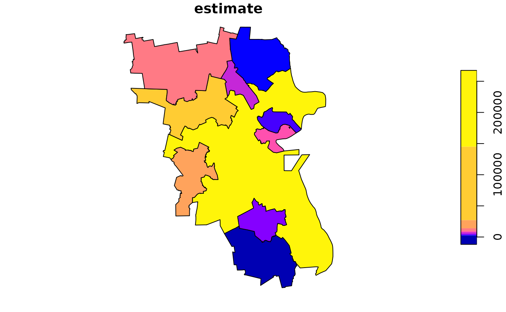

`geomultistar` object generator from American Community Survey (ACS) geodatabases
Jose Samos (jsamos@ugr.es)
2020-11-09
Source:vignettes/geogenr.Rmd
geogenr.RmdIntroduction
The multidimensional data model was defined with the aim of supporting data analysis. In multidimensional systems, data is structured in facts and dimensions1. The star model is widely accepted, it is recommended for use in widely distributed end-user tools.
The geographical dimension plays a fundamental role in
multidimensional systems. It is very interesting to have the possibility
of representing the reports obtained from multidimensional systems,
using their geographic dimensions, on a map, or performing spatial
analysis on them. This functionality is supported by package geomultistar.
The American
Community Survey (ACS), within the United States Census Bureau
(USCB), offers databases that can be structured using the
multidimensional data model to take advantage of its characteristics to
be consulted. A characteristic of these databases is that they have a
geographic component in the form of a vector layer. For this reason, the
structures offered by package geomultistar
are suitable for representing this data.
The main objective of this package is to automatically generate
multidimensional structures based on the geomultistar
package from the geodatabases provided by the ACS, which can be easily
queried by users.
Other packages are available that are very useful to access the same
data, such as tidycensus,
which works in an integrated way with tigris.
The main characteristics of geogenr that distinguish it
from other proposals are the following:
it works locally, once available geodatabases are downloaded (can be downloaded using the package);
supports access at the level of group of variables integrated in a layer, instead of at the level of variable or vector of variables;
decomposes ACS composite variables into structured fields;
allows to directly integrate variables of several years;
and automatically structures the data using the multidimensional data model.
The rest of this document is structured as follows: First, the starting data are presented. Then, an illustrative example of how the package works is developed. Finally, the document ends with conclusions.
American Community Survey 5-Year Estimates
The package is based on the geodatabases available on the TIGER/Line with Selected Demographic and Economic Data web page. For each year (as of 2010) a list of geodatabases appears under two sections:
Legal and Administrative Areas;
Statistical Areas.
As mentioned there for the year 2018 (the last one accessible at the moment), literally: “These geodatabases bring together geography from the 2018 TIGER/Line Shapefiles and data from the 2014-2018 American Community Survey (ACS) 5-year estimates.” Similar data are offered for the previous years for the periods corresponding to each one.
Each ACS geodatabase is structured in layers: a geographic layer, a metadata layer, and the rest are data layers. The data layers have a matrix form, the rows are indexed by instances of the geographic layer, the columns by variables defined in the metadata layer, the cells are numeric values. Here are two examples:
GEOID B00001e1 B00001m1 B00002e1 B00002m1
16000US0200065 60 -1 300 -1
16000US0200650 20 -1 20 -1
16000US0200760 350 -1 100 -1
16000US0200870 250 -1 60 -1
16000US0201090 200 -1 30 -1
16000US0201200 450 -1 100 -1
...
and
GEOID B01001e1 B01001m1 B01001e2 B01001m2 B01001e3 B01001m3 B01001e4 B01001m4 ...
16000US0100100 218 165 92 114 10 16 18 30
16000US0100124 2582 24 1313 98 45 37 14 19
16000US0100460 4374 24 1963 158 144 76 105 68
16000US0100484 641 159 326 89 10 17 16 11
16000US0100676 295 102 143 55 7 11 14 17
16000US0100820 32878 57 16236 453 1159 257 1151 209
...
Some of the defined variables are shown below.
Short Name Full Name
B00001e1 UNWEIGHTED SAMPLE COUNT OF THE POPULATION: Total: Total Population -- (Estimate)
B00001m1 UNWEIGHTED SAMPLE COUNT OF THE POPULATION: Total: Total Population -- (Margin of Error)
B00002e1 UNWEIGHTED SAMPLE HOUSING UNITS: Total: Housing Units -- (Estimate)
B00002m1 UNWEIGHTED SAMPLE HOUSING UNITS: Total: Housing Units -- (Margin of Error)
B01001e1 SEX BY AGE: Total: Total Population -- (Estimate)
B01001m1 SEX BY AGE: Total: Total Population -- (Margin of Error)
B01001e2 SEX BY AGE: Male: Total Population -- (Estimate)
B01001m2 SEX BY AGE: Male: Total Population -- (Margin of Error)
B01001e3 SEX BY AGE: Male: Under 5 years: Total Population -- (Estimate)
B01001m3 SEX BY AGE: Male: Under 5 years: Total Population -- (Margin of Error)
B01001e4 SEX BY AGE: Male: 5 to 9 years: Total Population -- (Estimate)
B01001m4 SEX BY AGE: Male: 5 to 9 years: Total Population -- (Margin of Error)
...
Each variable (Short Name) corresponds to combinations
of various field values separated by a separator (:),
forming a string (Full Name). The field name of each value
is not available but the topics included are detailed on the web page Subjects
Included in the Survey. There are thousands of variables of these
characteristics (more than 50,000) that, in addition to the metadata
layer, can be found on the TIGER/Line
with Selected Demographic and Economic Data Record Layouts web page.
For each combination of values, one variable associated with the
estimate and another with the margin of error are
defined. Within each layer, variables can be considered in groups,
defined by the first part of the Full Name (for example
UNWEIGHTED SAMPLE HOUSING UNITS and
SEX BY AGE).
A module of geogenr package analyses the components of
Full_name, structuring them in fields; and it allows access
to variables in groups.
An illustrative example
To obtain a geomultistar structure from the ACS data we
can distinguish three phases:
obtaining the data,
data selection,
and generation of results,
which are developed below.
Once the result structure is generated, we can define and execute queries on it.
Obtaining the data
The data is available in the form of a geodatabase. One geodatabase for each area in each of the two area sections.
To consult the areas of each of the sections we use an object of
class uscb_acs_5ye. When creating it, we can indicate a
folder that will be used as the destination for downloads, if another is
not indicated. Below are the operations to get the lists of available
areas.
library(geogenr)
ua <- uscb_acs_5ye(folder = "../data/us/")
(laa <- ua |> get_legal_and_administrative_areas())
#> [1] "Alaska Native Regional Corporation"
#> [2] "American Indian/Alaska Native/Native Hawaiian Area"
#> [3] "Congressional District (116th Congress)"
#> [4] "County"
#> [5] "Elementary School District"
#> [6] "Place"
#> [7] "Secondary School District"
#> [8] "State"
#> [9] "State Legislative Districts - Lower Chamber"
#> [10] "State Legislative Districts - Upper Chamber"
#> [11] "Unified School District"
#> [12] "Zip Code Tabulation Area"
(sa <- ua |> get_statistical_areas())
#> [1] "Combined New England City and Town Area"
#> [2] "Combined Statistical Area"
#> [3] "Metropolitan Division"
#> [4] "Metropolitan/Micropolitan Statistical Area"
#> [5] "New England City and Town Area"
#> [6] "New England City and Town Area Division"
#> [7] "Public Use Microdata Area"
#> [8] "Tribal Block Group"
#> [9] "Tribal Census Tract"
#> [10] "Urban Area"Since some geodatabases are included in the package, we have selected the area that has the smallest databases. Through the following operations2, we obtain the years for which the geodatabases of the chosen area are available on the web, and we download those corresponding to the selected years.
sa[6]
#> [1] "New England City and Town Area Division"
(y <- ua |> get_available_years_in_the_web(geodatabase = sa[6]))
#> [1] 2013 2014 2015 2016 2017 2018
(y_res <- ua |> download_geodatabases(geodatabase = sa[6], years = 2014:2015))
#> [1] 2014 2015Data selection
Once we have the geodatabases available locally, we move on to selecting the data.
In this case we create a new object of class
uscb_acs_5ye indicating the folder where the downloaded
geodatabases are: the package data folder.
folder <- system.file("extdata", package = "geogenr")
folder <- stringr::str_replace_all(paste(folder, "/", ""), " ", "")
ua <- uscb_acs_5ye(folder = folder)Using the following function, we check the years available locally for the selected area.
sa[6]
#> [1] "New England City and Town Area Division"
(y <- ua |> get_available_years_downloaded(geodatabase = sa[6]))
#> [1] 2014 2015Using the metadata included in the package
(uscb_acs_metadata), the object of class
uscb_acs_5ye where the data of the areas is included, the
area of the selected geodatabase and a reference year, we create an
object of class uscb_layer, from which we can consult the
layer names available for those area and year, as shown below.
ul <- uscb_layer(uscb_acs_metadata, ua = ua, geodatabase = sa[6], year = 2015)
(layers <- ul |> get_layer_names())
#> [1] "X00_COUNTS" "X01_AGE_AND_SEX" "X02_RACE"Of all the available layers, we obtain one from which we can consult the groups of variables that it includes, as shown in the following operations.
layers[3]
#> [1] "X02_RACE"
ul <- ul |> get_layer(layers[3])
(layer_groups <- ul |> get_layer_group_names())
#> [1] "001 - RACE"
#> [2] "003 - DETAILED RACE"
#> [3] "008 - WHITE ALONE OR IN COMBINATION WITH ONE OR MORE OTHER RACES"
#> [4] "009 - BLACK OR AFRICAN AMERICAN ALONE OR IN COMBINATION WITH ONE OR MORE OTHER RACES"
#> [5] "010 - AMERICAN INDIAN AND ALASKA NATIVE ALONE OR IN COMBINATION WITH ONE OR MORE OTHER RACES"
#> [6] "011 - ASIAN ALONE OR IN COMBINATION WITH ONE OR MORE OTHER RACES"
#> [7] "012 - NATIVE HAWAIIAN AND OTHER PACIFIC ISLANDER ALONE OR IN COMBINATION WITH ONE OR MORE OTHER RACES"
#> [8] "013 - SOME OTHER RACE ALONE OR IN COMBINATION WITH ONE OR MORE OTHER RACES"
#> [9] "014 - AMERICAN INDIAN AND ALASKA NATIVE ALONE FOR SELECTED TRIBAL GROUPINGS"
#> [10] "015 - ASIAN ALONE BY SELECTED GROUPS"
#> [11] "016 - NATIVE HAWAIIAN AND OTHER PACIFIC ISLANDER ALONE BY SELECTED GROUPS"
#> [12] "017 - AMERICAN INDIAN AND ALASKA NATIVE (AIAN) ALONE OR IN ANY COMBINATION BY SELECTED TRIBAL GROUPINGS"
#> [13] "018 - ASIAN ALONE OR IN ANY COMBINATION BY SELECTED GROUPS"
#> [14] "019 - NATIVE HAWAIIAN AND OTHER PACIFIC ISLANDER ALONE OR IN ANY COMBINATION BY SELECTED GROUPS"We obtain one of the groups by indicating its name, as shown below.
layer_groups[2]
#> [1] "003 - DETAILED RACE"
ul <- ul |> get_layer_group(layer_groups[2])Groups contain sets of variables. The variables of the selected group are shown below.
ul$layer_group_columns
#> [1] "GEOID" "C02003e1" "C02003m1" "C02003e2" "C02003m2" "C02003e3"
#> [7] "C02003m3" "C02003e4" "C02003m4" "C02003e5" "C02003m5" "C02003e6"
#> [13] "C02003m6" "C02003e7" "C02003m7" "C02003e8" "C02003m8" "C02003e9"
#> [19] "C02003m9" "C02003e10" "C02003m10" "C02003e11" "C02003m11" "C02003e12"
#> [25] "C02003m12" "C02003e13" "C02003m13" "C02003e14" "C02003m14" "C02003e15"
#> [31] "C02003m15" "C02003e16" "C02003m16" "C02003e17" "C02003m17" "C02003e18"
#> [37] "C02003m18" "C02003e19" "C02003m19"Generation of results
Once we have obtained a group of variables, we can obtain the associated data in various formats.
It offers the possibility of obtaining it as a tibble,
as shown below (the table is not shown due to the high number of columns
it has).
ft <- ul |> get_flat_table(remove_geometry = FALSE)
#> Warning in CPL_read_ogr(dsn, layer, query, as.character(options), quiet, : GDAL
#> Message 6: driver OpenFileGDB does not support open option METHOD
names(ft)
#> [1] "year" "cnectafp"
#> [3] "nectafp" "nctadvfp"
#> [5] "geoid" "name"
#> [7] "namelsad" "lsad"
#> [9] "mtfcc" "aland"
#> [11] "awater" "intptlat"
#> [13] "intptlon" "shape_length"
#> [15] "shape_area" "geoid_data"
#> [17] "short_name" "full_name"
#> [19] "inf_code" "group_code"
#> [21] "spec_code" "inf"
#> [23] "group" "demographic_race"
#> [25] "demographic_race_spec" "demographic_total_population"
#> [27] "demographic_total_population_spec" "estimate"
#> [29] "margin_of_error" "shape"
nrow(ft)
#> [1] 190We can also get an object of the geomultistar class.
gms <- ul |> get_geomultistar()
#> Warning in CPL_read_ogr(dsn, layer, query, as.character(options), quiet, : GDAL
#> Message 6: driver OpenFileGDB does not support open option METHODThe first rows of the dimension and fact tables are shown below.
| when_key | year |
|---|---|
| 1 | 2015 |
| where_key | cnectafp | nectafp | nctadvfp | geoid | name | namelsad | lsad | mtfcc | aland | awater | intptlat | intptlon | shape_length | shape_area | geoid_data |
|---|---|---|---|---|---|---|---|---|---|---|---|---|---|---|---|
| 1 | 715 | 71650 | 71654 | 7165071654 | Boston-Cambridge-Newton, MA | Boston-Cambridge-Newton, MA NECTA Division | M7 | G3220 | 3.668e+09 | 7.13e+08 | +42.2933266 | -071.0181929 | 7.653 | 0.4783 | 35500US7165071654 |
| 2 | 715 | 71650 | 72104 | 7165072104 | Brockton-Bridgewater-Easton, MA | Brockton-Bridgewater-Easton, MA NECTA Division | M7 | G3220 | 352799175 | 8831197 | +42.0216172 | -071.0267170 | 1.077 | 0.03932 | 35500US7165072104 |
| 3 | 715 | 71650 | 73104 | 7165073104 | Framingham, MA | Framingham, MA NECTA Division | M7 | G3220 | 532516314 | 24039093 | +42.2761738 | -071.4822008 | 1.738 | 0.06073 | 35500US7165073104 |
| 4 | 715 | 71650 | 73604 | 7165073604 | Haverhill-Newburyport-Amesbury Town, MA-NH | Haverhill-Newburyport-Amesbury Town, MA-NH NECTA Division | M7 | G3220 | 702086333 | 40447613 | +42.8671722 | -071.0254982 | 1.416 | 0.08179 | 35500US7165073604 |
| 5 | 715 | 71650 | 74204 | 7165074204 | Lawrence-Methuen Town-Salem, MA-NH | Lawrence-Methuen Town-Salem, MA-NH NECTA Division | M7 | G3220 | 207735751 | 9917120 | +42.7282758 | -071.1630701 | 0.9094 | 0.02392 | 35500US7165074204 |
| 6 | 715 | 71650 | 74804 | 7165074804 | Lowell-Billerica-Chelmsford, MA-NH | Lowell-Billerica-Chelmsford, MA-NH NECTA Division | M7 | G3220 | 863143106 | 27403003 | +42.6141693 | -071.4837821 | 2.441 | 0.09771 | 35500US7165074804 |
| what_key | short_name | full_name | inf_code | group_code | spec_code | inf | group | demographic_race | demographic_race_spec | demographic_total_population | demographic_total_population_spec |
|---|---|---|---|---|---|---|---|---|---|---|---|
| 1 | C02003_01 | DETAILED RACE: Total: Total Population | C02 | 003 | 1 | RACE | DETAILED RACE | Total | Total Population | ||
| 2 | C02003_02 | DETAILED RACE: Population of one race: Total Population | C02 | 003 | 2 | RACE | DETAILED RACE | Population of one race | Total Population | ||
| 3 | C02003_03 | DETAILED RACE: Population of one race: White: Total Population | C02 | 003 | 3 | RACE | DETAILED RACE | Population of one race | White | Total Population | |
| 4 | C02003_04 | DETAILED RACE: Population of one race: Black or African American: Total Population | C02 | 003 | 4 | RACE | DETAILED RACE | Population of one race | Black or African American | Total Population | |
| 5 | C02003_05 | DETAILED RACE: Population of one race: American Indian and Alaska Native: Total Population | C02 | 003 | 5 | RACE | DETAILED RACE | Population of one race | American Indian and Alaska Native | Total Population | |
| 6 | C02003_06 | DETAILED RACE: Population of one race: Asian alone: Total Population | C02 | 003 | 6 | RACE | DETAILED RACE | Population of one race | Asian alone | Total Population |
| when_key | where_key | what_key | estimate | margin_of_error | nrow_agg |
|---|---|---|---|---|---|
| 1 | 1 | 1 | 2846699 | 131 | 1 |
| 1 | 1 | 2 | 2754158 | 3195 | 1 |
| 1 | 1 | 3 | 2134196 | 4429 | 1 |
| 1 | 1 | 4 | 274896 | 2907 | 1 |
| 1 | 1 | 5 | 4817 | 603 | 1 |
| 1 | 1 | 6 | 253518 | 2264 | 1 |
Once we have verified that the data for the reference year is what we need, we can expand our database considering the rest of the years available in the folder. The only requirement to consider a year is that its variable structure be the same as that of the reference year.
To do this, we create a class uscb_folder object from
the reference year object, as shown below.
uf <- uscb_folder(ul)We can get a tibble from the new object. In this case it
has more rows. In this case you have more rows than for just one year,
as you would expect.
cft <- uf |> get_common_flat_table()
#> Warning in CPL_read_ogr(dsn, layer, query, as.character(options), quiet, : GDAL
#> Message 6: driver OpenFileGDB does not support open option METHOD
#> Warning in CPL_read_ogr(dsn, layer, query, as.character(options), quiet, : GDAL
#> Message 6: driver OpenFileGDB does not support open option METHOD
nrow(cft)
#> [1] 380We can also get a geomultistar object.
cgms <- uf |> get_common_geomultistar()
#> Warning in CPL_read_ogr(dsn, layer, query, as.character(options), quiet, : GDAL
#> Message 6: driver OpenFileGDB does not support open option METHODInstead of displaying all the tables, we focus on the table in the when dimension.
| when_key | year |
|---|---|
| 1 | 2014 |
| 2 | 2015 |
Includes data for all available years.
Queries with geographic information
Once we have a geomultistar object, we can use the
functionality of the geomultistar
package.
Specifically, the only field that has geographic information directly
associated with is geoid. If we want to associate that
information to other fields of the dimension, such as the
name field, we must do it using the operation shown
below.
library(geomultistar)
cgms <- cgms |>
define_geoattribute(
attribute = c("name"),
from_attribute = "geoid"
)We can define multidimensional queries using the functionality of the
starschemar
package, as shown below.
library(starschemar)
gdqr <- dimensional_query(cgms) |>
select_dimension(name = "where",
attributes = c("name")) |>
select_dimension(name = "what",
attributes = c("short_name", "demographic_race_spec")) |>
select_fact(name = "detailed_race",
measures = c("estimate")) |>
filter_dimension(name = "when", year == "2015") |>
filter_dimension(name = "what", demographic_race_spec == "Asian alone") |>
run_geoquery()The first rows of the result can be seen below in table form.
| short_name | demographic_race_spec | name | estimate | nrow_agg | Shape |
|---|---|---|---|---|---|
| C02003_06 | Asian alone | Boston-Cambridge-Newton, MA | 253518 | 1 | POLYGON ((-71.39 42.37, -71… |
| C02003_06 | Asian alone | Brockton-Bridgewater-Easton, MA | 3548 | 1 | POLYGON ((-71.08 42.1, -71…. |
| C02003_06 | Asian alone | Framingham, MA | 17611 | 1 | MULTIPOLYGON (((-71.39 42.3… |
| C02003_06 | Asian alone | Haverhill-Newburyport-Amesbury Town, MA-NH | 2375 | 1 | POLYGON ((-71.22 42.91, -71… |
| C02003_06 | Asian alone | Lawrence-Methuen Town-Salem, MA-NH | 6752 | 1 | POLYGON ((-71.19 42.7, -71…. |
| C02003_06 | Asian alone | Lowell-Billerica-Chelmsford, MA-NH | 36648 | 1 | POLYGON ((-71.67 42.6, -71…. |
| C02003_06 | Asian alone | Lynn-Saugus-Marblehead, MA | 8476 | 1 | POLYGON ((-70.9 42.48, -70…. |
| C02003_06 | Asian alone | Nashua, NH-MA | 10322 | 1 | POLYGON ((-71.88 42.88, -71… |
| C02003_06 | Asian alone | Peabody-Salem-Beverly, MA | 3381 | 1 | MULTIPOLYGON (((-71 42.56, … |
| C02003_06 | Asian alone | Taunton-Middleborough-Norton, MA | 2125 | 1 | POLYGON ((-71.19 41.91, -71… |
The result is a vector layer that we can save, perform spatial
analysis or queries on it, or we can see it as a map, using the
functions associated with the sf class.

Conclusions
The American Community Survey (ACS) offers geodatabases with geographic information and associated data of interest to researchers in the area. These data can be accessed through various alternatives in which you must indicate the year and variable names. Due to the large number of variables and their structure, this operation is not easy.
The geogenr package offers an alternative that allows
you to download the geodatabases that are considered necessary and
access the variables by selecting data layers and logical groups of
variables. Additionally, it automatically generates a multidimensional
structure that includes the available geographic information. From this
structure, multidimensional queries that include the available
geographic information can easily be defined.
The data obtained can be processed with the sf package
to define spatial queries or analysis, be presented in maps or saved as
a file to be used by a GIS (Geographical Information
System).